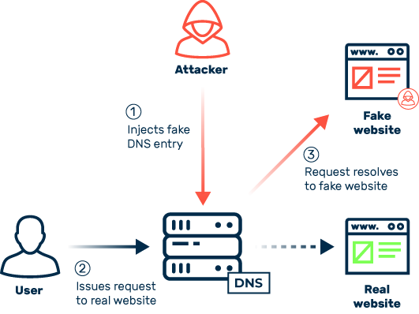
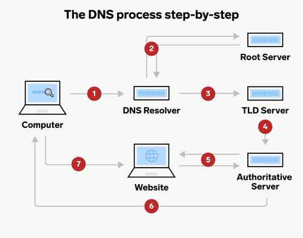

What is DNS (Domain Name System)?
The Domain Name System is like the phonebook of the internet. It converts human-readable domain names like example.com into IP addresses like 192.158.1.3. Computers communicate using IP addresses, but humans use domain names because they are easier to remember.
An important characteristic to note about DNS is that it's an open public communication protocol - for schools, the government, etc. This makes such an open network susceptible to cyber attacks such as DNS spoofing. (Safe websites prevent this by asking your web browser to communicate on a secure channel, using SSL and TLS.)
Whenever you type a URL in your browser, your computer asks the DNS server. When asked, the server is responsible for finding the correct IP address of that website - whether that DNS knows the address already, or has to ask other DNS servers.
How DNS servers work together:
- DNS servers are connected in a distributed hierarchy. The DNS hierarchy starts with ROOT DNS SERVERS at the highest level. There are 13 root server clusters worldwide, but they do not store the complete DNS records.
- Instead, they provide pointers to the next level in the hierarchy - TOP-LEVEL DOMAIN SERVERS (TLD name servers). 
- When your local DNS server asks the root server, it gets directed to the appropriate TLD name server (.org, .com, .net, etc.).